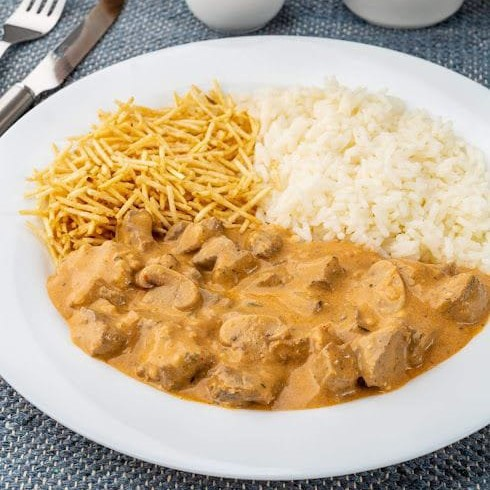

Top 3 melhores comidas

strogonoff 2¬∞ü•à
O strogonoff mesmo sendo um prato originalmente russo que era servido com batatas, chegou no Brasil e ganhou seu “jeitinho brasileiro” sendo servido com arroz e batata palha, que convenhamos, é muito melhor.
pudim 1¬∞ü•á
A origem do pudim remonta ao Império Romano, onde era feito com leite, mel e ovos. Com o passar dos anos, a receita foi se modificando e ganhando novos ingredientes. E assim, o pudim se tornou uma sobremesa popular em diversos países ao redor do mundo.

sonho 3¬∞ü•â
O sonho é um doce que, apesar de seu sabor incrível, carrega uma história interessante. Ele foi criado no meio da guerra e é moldado com o formato de uma bala de canhão.